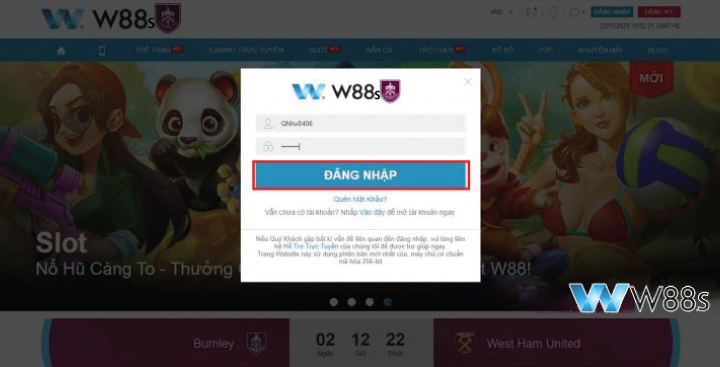
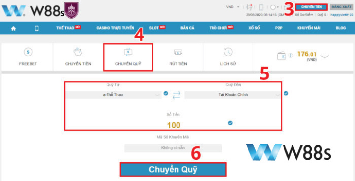
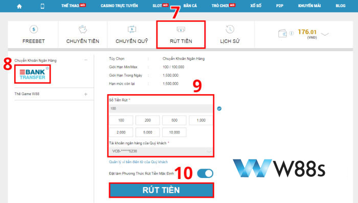
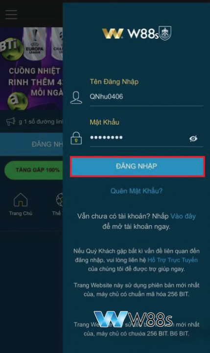
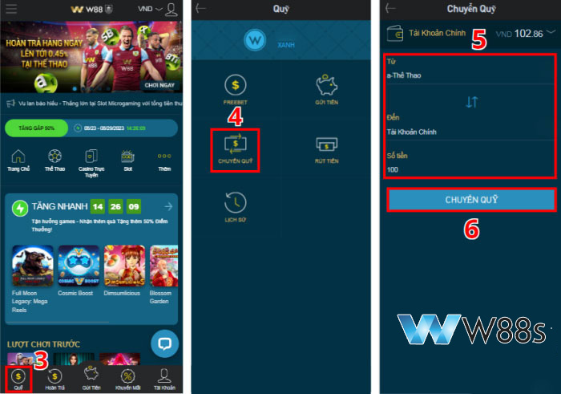
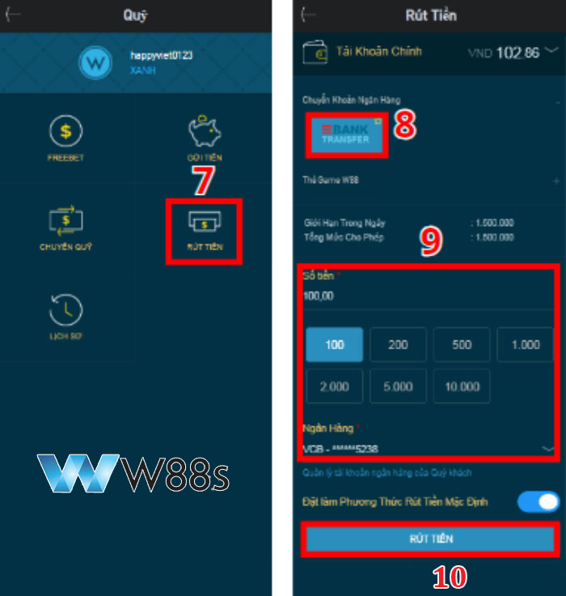

RÚT TIỀN W88s – HƯỚNG DẪN NHANH CHÓNG VÀ CHI TIẾT NHẤT THÀNH CÔNG 100%
Sau khi giành được chiến thắng từ W88s, việc rút tiền W88s vào tài khoản ngân hàng của bạn giờ đây trở nên đơn giản và nhanh chóng. Với hướng dẫn chi tiết của W88s, chỉ trong 5-10 phút, tiền thưởng sẽ an toàn nằm trong ví của bạn. Khám phá quy trình rút tiền W88s tiện lợi ngay bây giờ.
Tham khảo chi tiết cách thức nạp tiền tại đây
Cách rút tiền W88s chi tiết qua chuyển khoản ngân hàng
Hiện có hai phương thức rút tiền từ W88s mà bạn có thể lựa chọn. Trong đó, phương thức rút tiền qua chuyển khoản ngân hàng là lựa chọn phổ biến nhất, được đông đảo người chơi sử dụng.
Cách rút tiền từ W88s trên máy tính
Để rút tiền W88s trên máy tính, hãy làm theo các bước sau:
Bước 1: Đăng nhập W88s
Truy cập trang chủ W88s qua link do w88ss.xyz cung cấp và đăng nhập vào tài khoản W88s.
- Trên hộp thoại hiển thị, điền tên tài khoản và mật khẩu vào
- Sau đó nhấn ‘ĐĂNG NHẬP’ để vào tài khoản W88s.
Nếu chưa có tài khoản vui lòng đăng ký ngay tại đây

Đăng nhập W88s
Bước 2: Chuyển tiền vào tài khoản chính
Sau khi thắng cược, tiền thưởng sẽ nằm trong các ví như Thể Thao, Casino, Slot. Bạn cần chuyển tiền từ các ví này vào tài khoản chính của mình.
- Khi đã đăng nhập vào W88s, truy cập vào mục “CHUYỂN TIỀN” trong sảnh.
- Chọn “CHUYỂN QUỸ” từ thanh menu, sau đó điền thông tin cần thiết bao gồm chọn ví phụ và số tiền muốn chuyển.
- Kết thúc quá trình bằng cách nhấp vào “CHUYỂN QUỸ”.

Chuyển tiền vào tài khoản chính
Bước 3: Thực hiện rút tiền
Sau khi chuyển tiền vào tài khoản chính, trở lại sảnh chuyển tiền và thực hiện các bước rút tiền như sau:
- Trong sảnh chuyển tiền, chọn ‘RÚT TIỀN’.
- Sau đó, tại menu bên trái, nhấp vào ‘Chuyển Khoản Ngân Hàng’.
- Điền thông tin vào phiếu chuyển tiền, bao gồm số tiền và chọn ngân hàng.
- Cuối cùng, nhấn ‘RÚT TIỀN’ và chờ xác nhận giao dịch thành công từ nhà cái.

Thực hiện rút tiền
Cách rút tiền từ W88s trên điện thoại
Nếu bạn thích chơi cá cược trên điện thoại, việc rút tiền từ W88s cũng rất tiện lợi, dù qua trình duyệt hay ứng dụng W88s.
Bước 1: Đăng nhập W88s Mobile
Truy cập trang chủ W88s Mobile bằng link cung cấp, sau đó đăng nhập tài khoản W88s của bạn.

Đăng nhập W88s Mobile
Bước 2: Chuyển tiền vào tài khoản chính
Trên W88s, bạn sẽ tìm thấy 09 ví phụ, mỗi ví tương ứng với một sảnh chơi. Để chuyển tiền vào tài khoản chính, hãy thực hiện các bước sau:
- Chọn ‘Quỹ’ ở cuối trang chủ W88s.
- Nhấn vào ‘CHUYỂN QUỸ’ trong mục giao dịch.
- Điền thông tin cần thiết, bao gồm chọn ví phụ và nhập số tiền bạn muốn chuyển.
- Cuối cùng, xác nhận thao tác bằng cách nhấn ‘CHUYỂN QUỸ’.

Chuyển tiền vào tài khoản chính
Bước 3: Rút tiền về ngân hàng
Sau khi chuyển quỹ thành công tại W88s, hãy làm theo các bước sau để rút tiền:
- Trở lại sảnh chuyển tiền và chọn ‘RÚT TIỀN’.
- Nhắn vào mục ‘Chuyển Khoản Ngân Hàng’.
- Trên màn hình phiếu rút tiền, điền các thông tin cần thiết như số tiền và chọn ngân hàng.
- Cuối cùng, chọn vào nút ‘RÚT TIỀN’ để hoàn thành.

Rút tiền về ngân hàng
Cách rút tiền W88s bằng thẻ game W88s không tốn phí
Phương thức rút tiền từ W88s bằng thẻ game rất thích hợp cho những người chơi muốn giữ bí mật thông tin cá nhân, vì nó không yêu cầu liên kết với tài khoản ngân hàng và hoàn toàn miễn phí. Tuy nhiên, cách này cũng có nhược điểm: thẻ game chỉ dùng được tại nhà cái, quá trình xử lý có thể mất thời gian hơn và bạn cần liên hệ với đại lý của nhà cái để đổi thẻ thành tiền mặt.
Để rút tiền từ W88s qua thẻ game, hãy thực hiện các bước sau:
- Đăng nhập vào tài khoản W88s và vào mục ‘CHUYỂN TIỀN’.
- Trên thanh công cụ, chọn vào mục ‘RÚT TIỀN’.
- Chọn hình thức rút tiền qua ‘Thẻ Game W88s’.
- Khi phiếu rút tiền hiện ra, điền thông tin cần thiết bao gồm số tiền và số lượng thẻ game cần rút.
- Cuối cùng, chọn vào nút ‘RÚT TIỀN’ để hoàn thành.
Lưu ý: Thông tin thẻ game sẽ được gửi đến Email đăng ký của bạn. Thẻ game có hạn sử dụng 3 tháng kể từ ngày rút.
Những điều kiện rút tiền W88s
Để rút tiền từ W88s thành công, hãy lưu ý những điều kiện sau:
- Bạn cần có ít nhất 100.000 VND trong tài khoản. Nếu ít hơn, bạn không thể rút được tiền.
- Bạn chỉ có thể rút tối đa 50 triệu đồng mỗi lần. Đảm bảo tên chủ tài khoản ngân hàng trùng khớp với tên đăng ký tại W88s.
- Thiết bị bạn sử dụng để rút tiền, như điện thoại hoặc máy tính bảng, cần có kết nối internet.
- Bạn phải hoàn thành số vòng cược quy định, thường là 20-30 vòng, để có thể rút tiền thưởng.
- Lần đầu rút tiền mất tối đa 24 giờ để xác minh thông tin, còn các lần sau mất khoảng 15-30 phút.
FAQ – Thắc mắc thường gặp khi rút tiền W88s
Khi thực hiện giao dịch W88s rút tiền, người chơi có thể gặp một số câu hỏi sau:
Lý do W88s không rút được tiền?
Điều này có thể xảy ra nếu bạn không có đủ số dư tối thiểu cần thiết, là 100.000 VND, trong tài khoản. Đảm bảo bạn đã kiểm tra và đáp ứng yêu cầu này.
Số tiền tối đa tôi có thể rút trong một lần là bao nhiêu?
Bạn có thể rút tối đa 1.500.000.000 VND mỗi ngày từ W88s. Để tránh tình trạng không thể rút tiền, hãy nhớ giới hạn số tiền tối thiểu và tối đa cho mỗi lệnh rút.
Đối với cả hai phương thức rút tiền, giới hạn giao dịch nằm trong khoảng từ 100.000 VND đến 100.000.000 VND mỗi lệnh. Riêng đối với thẻ game, mệnh giá thẻ nằm trong khoảng từ 50.000 VND đến 50.000.000 VND, nên bạn có thể chọn số lượng thẻ phù hợp với nhu cầu của mình.
FAQ – Thắc mắc thường gặp khi rút tiền W88s
Bao lâu thì tiền sẽ được chuyển vào tài khoản ngân hàng của tôi?
W88s tuân thủ quy trình xác minh bảo mật nghiêm ngặt cho mọi lệnh rút tiền. Do đó, thời gian nhận tiền vào tài khoản ngân hàng của bạn thường mất từ 15 đến 30 phút sau khi yêu cầu rút tiền được W88s xử lý.
Khi rút tiền qua thẻ game, mã thẻ và số seri sẽ được gửi đến email của bạn. Nếu thông tin rút tiền chính xác và không vi phạm quy định, nhà cái sẽ gửi thông tin thẻ trong khoảng 5-10 phút.
Lưu ý: Nếu bạn rút tiền về một ngân hàng không nằm trong danh sách ngân hàng được W88s hỗ trợ, thời gian xử lý giao dịch có thể lên tới 1-3 tiếng, hoặc thậm chí là 1-3 ngày.
Cần hoàn thành bao nhiêu vòng cược trước khi rút tiền?
Thông thường, bạn cần hoàn thành từ 20-30 vòng cược để rút tiền thưởng. Kiểm tra điều kiện cụ thể trong phần quy định của khuyến mãi.
Có mất phí khi rút tiền không?
Rút tiền từ W88s thường không mất phí. Tuy nhiên, tùy thuộc vào phương thức gửi tiền bạn chọn, ngân hàng của bạn có thể áp dụng một số phí nhất định.
Nhà cái chấp nhận những loại tiền tệ nào?
W88s chấp nhận nhiều loại tiền tệ khác nhau bao gồm VND, Rupiah, Ringgit, Nhân dân tệ, Yên, Won, Baht và USD.
Kết thúc bài viết trên, hy vọng bạn đã có được thông tin cần thiết để thực hiện rút tiền W88s một cách nhanh chóng, an toàn và hiệu quả. Những hướng dẫn chi tiết từng bước, cùng với các mẹo và lời khuyên đã được chia sẻ, sẽ giúp bạn tránh những sai sót không đáng có và tận hưởng trải nghiệm chơi game suôn sẻ tại W88s. Chúc bạn may mắn và hãy nhớ quay lại với chúng tôi để cập nhật thêm nhiều thông tin hữu ích khác!
Mọi thắc mắc cần giải đáp, vui lòng liên hệ với chúng tôi theo các cách sau:
- Website: https://w88s.xyz/